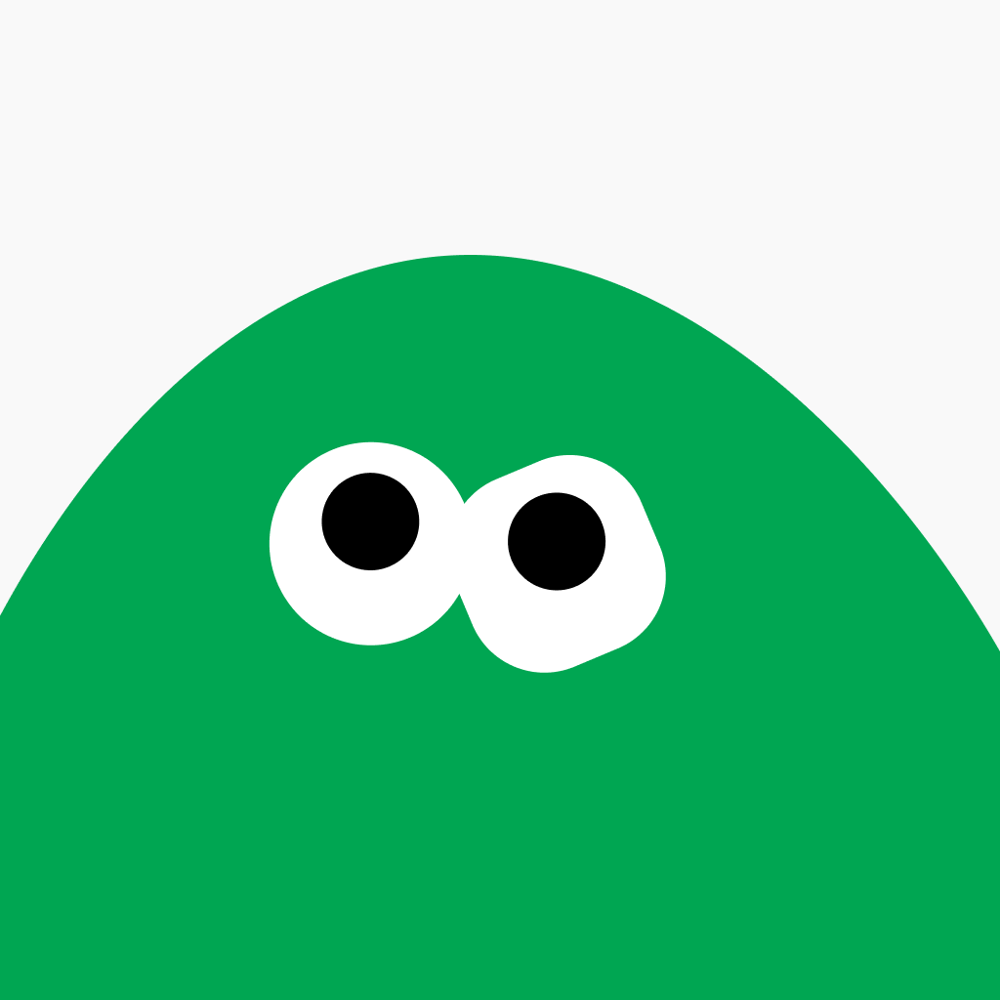

Support
Goal Sticker is an iPhone app for important things that don't fit a calendar or a to-do list.
Calendars and to-do lists work best when you know exactly when to act. But many goals don't have a perfect reminder date. Set it too early and you'll ignore it. Set it too late and you've missed your chance.
Goal Sticker focuses on the goal, not just the reminder. Instead of relying on one perfect date, it keeps goals visible until they're done and makes reminders more noticeable as the right time approaches.
Perfect for things like dental checkups, reviewing subscriptions before they renew, buying birthday gifts, and other goals without a fixed action date.
Questions, bugs, or feature requests — email us and we'll reply, usually within a few days.
A Fixed goal has a real deadline — if the date passes and you haven't completed it, it's marked as missed. A Flex goal doesn't expire: the due date quietly moves forward with today, and it keeps reminding you until you mark it done. Use Fixed for things with a hard cutoff, Flex for things you genuinely intend to do but can't pin to a date.
They're the three phases of a goal's life. Green is quiet — the deadline is far off and you hear nothing. Amber is a gentle heads-up as it comes into range. Red is the urgent stretch just before and including the due date, where reminders come more often. You choose how many days before the deadline each zone starts.
Check iOS Settings → Goal Sticker → Notifications and make sure Allow Notifications is on. If a goal is still in its Green zone it won't notify you yet — that's by design. You can also check the goal's own reminder settings to confirm it isn't set to silent.
Not currently. Everything is stored on your iPhone, with no account and no server, so goals don't sync between devices.
A single one-time purchase — not a subscription. It unlocks unlimited goals (the free version holds three at a time), editable reminder zone lengths, custom reminder counts, and Goal History.
Open the upgrade screen and tap Restore Purchases. Purchases are tied to your Apple Account, so restoring works on any device signed in with the same one. If that doesn't resolve it, email us.
Delete the app. Everything Goal Sticker knows lives on your device, so removing the app removes all of it. There's nothing stored anywhere else for us to delete.
No. There are no accounts, no analytics, and no network requests. See our privacy policy.